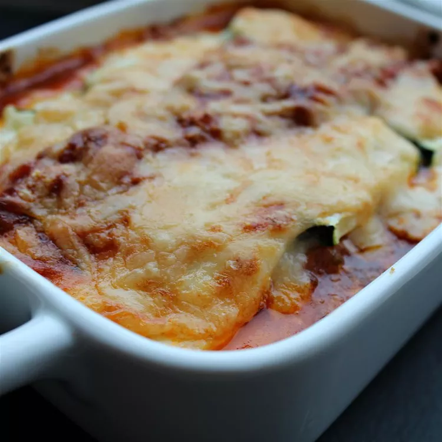

Lasagne

Zoodle lasagne!
a recipie for gluetn free zoodle lasagne
Ingredients
- 4 zucchini
- 1 1/2 cups tomato sauce
- 2/3 cups shredded mozzerela cheese
- 1 1/2 cups bechamel sauce
- 1 cup grated parmigiano reggiano cheese
- 1/4 cup fresh basil, chopped
Directions
- Preheat oven to 375 degrees F
- Cut zucchini lengthwise into 1/4 inch thick slices
- Pour 2 tablespoons tomato sauce on the bottom of a 9x13-inch baking dish. Arrange zucchini slices in a single layer, slightly overlapping, over tomato sauce.
- Top with a thin layer of mozzarella, 1/3 of the bechamel (see Editor's Note), 1/3 of remaining tomato sauce, 1/3 of the Parmigiano Reggiano cheese, and 1/3 of the basil. Repeat layers, topping with bechamel and Parmigiano Reggiano cheese.
- Bake in the preheated oven until sauce is bubbly and the top is golden brown, about 35 minutes. Allow to set until remaining liquid is absorbed, about 10 minutes.